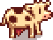

Marnie's Ranch
Jump to navigation
Jump to search
| Marnie's Ranch | |
 | |
 | |
| Open Hours: | 9:00am to 4:00pm (Building open 9am to 6pm) |
| Closed: | Monday, Tuesday (building remains accessible) |
| Occupants: | |
Marnie's Ranch is located in the northeast area of Cindersap Forest, near the southwest entrance to Pelican Town. The Ranch is occupied by Marnie, along with her niece Jas, and her nephew Shane.
Marnie runs her shop from 9:00am to 4:00pm each day, except Mondays, Tuesdays, Fall 18, and Winter 18.
The Ranch house is accessible from 9:00am to 6:00pm every day, even when the shop is closed.
If Animal Catalogue has been read, the shop is accessible even when Marnie is not behind the counter.
Shop Inventory
| Image | Name | Description | Price |
|---|---|---|---|
| Hay | Dried grass used as animal food. | ||
| Heater | Keeps your animals warmer and happier during the winter. | ||
| Animal Catalogue | You can access Marnie's shop when she's not around. | ||
| Milk Pail | Gather milk from your animals. | ||
| Shears | Use this to collect wool from sheep | ||
| Auto-Grabber | Automatically harvests from your animals each morning. Must be placed inside a coop or barn. Becomes available at Farming Level 10 |
||
| Ornamental Hay Bale | A decorative piece for your farm. | ||
| Golden Egg | A very rare and special egg with a solid gold shell. Becomes available once perfection is achieved |
||
| Doghouse | Can be placed outside. | ||
| Dark Doghouse | Can be placed outside. | ||
| Cat Tree | Can be placed as decoration. | ||
| Dark Cat Tree | Can be placed as decoration. | ||
| Bird House | Can be placed outside. |
Livestock
| Image | Name | Description | Price | Building Required |
|---|---|---|---|---|
| Chicken | Well cared-for adult chickens lay eggs every day. Lives in the coop. | Coop | ||

|
Cow | Adults can be milked daily. A milk pail is required to harvest the milk. Lives in the barn. | Barn | |
 |
Goat | Happy adults provide goat milk every other day. A milk pail is required to harvest the milk. Lives in the barn. | Big Barn | |
| Duck | Happy adults lay duck eggs every other day. Lives in the coop. | Big Coop | ||
 |
Sheep | Adults can be shorn for wool. Sheep who form a close bond with their owners can grow wool faster. A pair of shears is required to harvest the wool. Lives in the barn. | Deluxe Barn | |
| Rabbit | These are wooly rabbits! They shed precious wool every few days. Lives in the coop. | Deluxe Coop | ||
 |
Pig | These pigs are trained to find truffles! Lives in the barn. | Deluxe Barn |
Notes
- Marnie won't sell animals if the building associated is under construction or during an upgrade.
- It is possible to see what color animal you will receive before paying for it. When asked to select which building your animal will stay in, the note at the top of the screen will reveal which color the animal it is. Canceling the purchase at that point will return you to the purchase menu.
- Even though Marnie uses male pronouns when referring to some of the pigs and sheep at purchase, the pregnancy feature is still available for them.
Quests
- Mayor's "Shorts" - Mayor Lewis' Purple Shorts can be found in Marnie's room.
Trivia
- When choosing the "Supplies Shop", there is a 0.01% chance for the text under Marnie's portrait to read "*sigh*... When the door opened I thought it might be Lewis."
- If you inspect the dresser in Marnie's room a text box appears saying "there's a pair of brown suspenders"
History
- 1.3.27: Added Auto-Grabber and Ornamental Hay Bale to shop stock.
- 1.5: Added Golden Egg to shop stock.
- 1.6: Added Animal Catalogue, Doghouses, Cat Trees, and Bird House to stock.
| Buildings | ||
|---|---|---|
| Merchants | Abandoned House • Adventurer's Guild • Blacksmith • Bookseller • Carpenter's Shop • Casino • Desert Trader • Fish Shop • Giant Stump • Harvey's Clinic • Ice Cream Stand • Island Trader • JojaMart • Marnie's Ranch • Oasis • Pierre's General Store • Qi's Walnut Room • The Stardrop Saloon • Traveling Cart • Volcano Dwarf • Wizard's Tower | |
| Houses | 1 River Road • 2 River Road • 1 Willow Lane • 2 Willow Lane • 24 Mountain Road • Elliott's Cabin • Farmhouse • Island Farmhouse • Leah's Cottage • Mayor's Manor • Tent • Trailer • Treehouse | |
| Farm Buildings | Farming | Barn • Cabin • Coop • Fish Pond • Greenhouse • Mill • Pet Bowl • Shed • Silo • Slime Hutch • Stable • Well |
| Special | Desert Obelisk • Earth Obelisk • Farm Obelisk • Gold Clock • Island Obelisk • Junimo Hut • Water Obelisk | |
| Other Buildings | Community Center • Dog Pen • Island Field Office • Joja Warehouse • Movie Theater • Museum • Spa • Witch's Hut | |